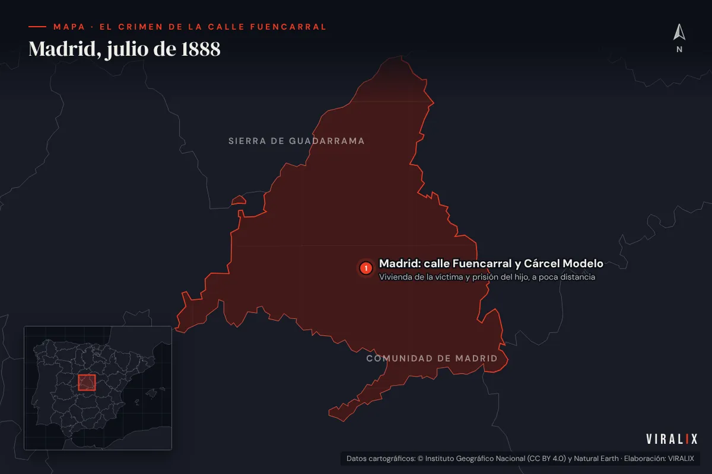
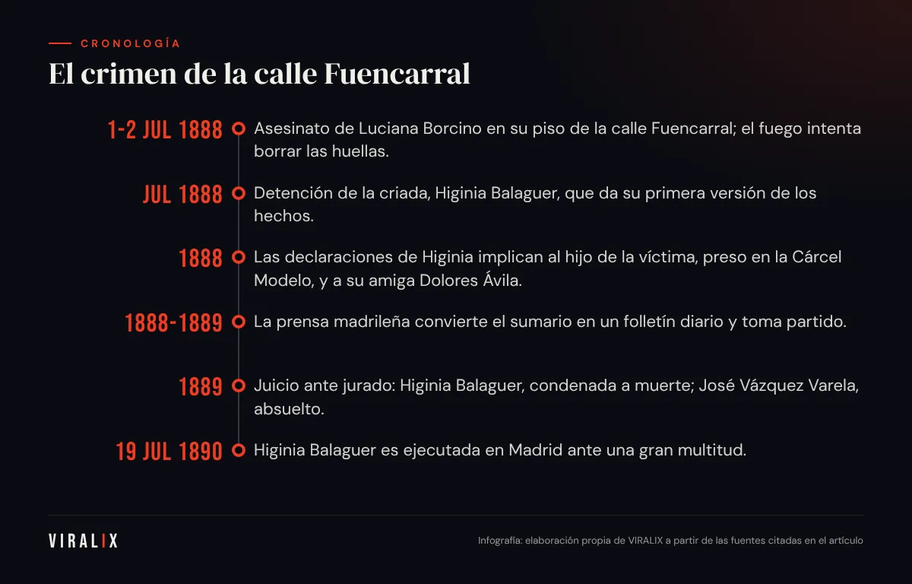
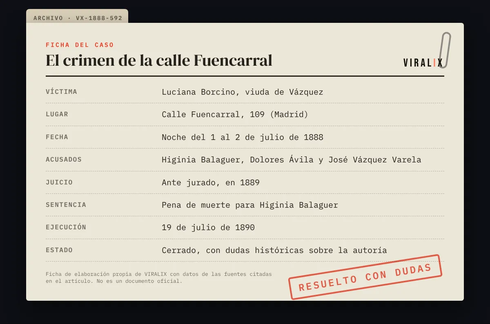

El 2 de julio de 1888, poco después del amanecer, los vecinos del número 109 de la calle Fuencarral de Madrid notaron humo saliendo de uno de los pisos. Al entrar encontraron un incendio pequeño y deliberado, un perro aturdido, una criada medio inconsciente y, en una de las habitaciones, el cuerpo de la propietaria: Luciana Borcino, viuda acomodada de unos cincuenta años. Había sido asesinada durante la noche y alguien había intentado quemar la escena para borrar las huellas.
Lo que siguió no fue solo una investigación criminal. Fue, según coinciden los historiadores del periodismo, el primer gran juicio mediático de la historia de España: un caso en el que los periódicos tomaron partido, publicaron filtraciones del sumario, entrevistaron a los acusados y convirtieron a una criada aragonesa en la mujer más comentada del país.
Una viuda, una criada y un hijo en prisión
La víctima vivía sola con su servicio doméstico. Su único hijo, José Vázquez Varela, era un joven de mala fama al que la prensa apodaba «el pollo Varela» —en el argot de la época, pollo designaba al señorito presumido y ocioso—. Las relaciones entre madre e hijo eran pésimas: había denuncias previas, disputas por dinero y una convivencia imposible.
La noche del crimen, sin embargo, José Vázquez Varela tenía la mejor coartada imaginable: estaba preso en la Cárcel Modelo de Madrid, cumpliendo condena por un delito menor. Nadie podía, en teoría, estar más lejos de la calle Fuencarral.
La persona que estaba en la casa era Higinia Balaguer, una criada nacida en Aragón que llevaba muy poco tiempo al servicio de la viuda. Fue encontrada en estado de aturdimiento, con síntomas de haber inhalado humo o tomado alguna sustancia, y de inmediato se convirtió en la principal sospechosa.
Las mil versiones de Higinia Balaguer
El rasgo más desconcertante del caso fue el comportamiento de la principal acusada. A lo largo de la instrucción, Higinia Balaguer ofreció varias versiones distintas y contradictorias de lo ocurrido aquella noche. En unas se declaraba inocente; en otras admitía haber participado; en algunas implicaba a una amiga suya, Dolores Ávila, y en otras señalaba directamente al hijo de la víctima.
La versión que más impacto tuvo fue la que situaba a José Vázquez Varela en la casa la noche del crimen. Según ese relato, el joven habría salido de la cárcel con la complicidad del director del establecimiento y habría regresado antes del recuento sin que nadie lo echara en falta. La acusación era explosiva por un detalle: Higinia había trabajado anteriormente como criada en casa de ese director, José Millán Astray, padre del futuro fundador de la Legión.
¿Una cárcel con las puertas abiertas?
La idea de que un preso pudiera entrar y salir de la Cárcel Modelo a voluntad no era tan descabellada para los lectores de 1888. La prensa llevaba tiempo denunciando el trato de favor que algunos internos con recursos recibían en las prisiones madrileñas. De pronto, el crimen de una viuda se convirtió en una pregunta sobre la corrupción de las instituciones:
- ¿Salía el hijo de la víctima de la cárcel por las noches?
- ¿Lo sabía —o lo facilitaba— el director de la prisión?
- ¿Estaba la criada protegiendo a alguien más poderoso que ella?
- ¿O era todo una invención de una acusada que intentaba salvarse?
Ninguna de estas preguntas encontró una respuesta concluyente en el juicio. Pero todas se debatieron, con pasión, en las páginas de los diarios.

La prensa como tribunal
El crimen coincidió con un momento de expansión de la prensa española. Diarios como El Imparcial, El Liberal o La Correspondencia de España competían por la atención de un público lector creciente, y el caso Fuencarral les ofreció exactamente lo que buscaban: misterio, clases sociales enfrentadas, una mujer enigmática y la sospecha de un encubrimiento.
Los periódicos publicaron detalles del sumario que debían ser secretos, dibujos de los acusados, cartas, entrevistas y teorías propias. Cada cabecera tenía su culpable favorito y lo defendía con argumentos —y con intereses— que a menudo tenían más que ver con la política que con las pruebas. La prensa liberal tendía a ver un encubrimiento de las autoridades; la conservadora prefería la culpabilidad de la criada.
La prensa no se limitó a contar el crimen de la calle Fuencarral: lo juzgó, día a día, antes de que lo hiciera el jurado.
— VIRALIX
Entre los periodistas que siguieron el caso estuvo Benito Pérez Galdós, que escribió crónicas sobre el crimen como corresponsal del diario argentino La Prensa de Buenos Aires. Galdós observó con agudeza cómo la opinión pública se fabricaba en los cafés y en las redacciones antes de que los jueces dijeran nada, y cómo el caso retrataba a una sociedad desconfiada de sus propias instituciones.
El jurado, recién estrenado
Había otro ingrediente que hacía único este proceso. En 1888 se había aprobado en España una nueva Ley del Jurado, que permitía que ciudadanos legos decidieran sobre la culpabilidad en determinados delitos graves. El caso Fuencarral fue uno de los primeros procesos de gran repercusión juzgados con este sistema, y muchos lo vivieron como una prueba de fuego: ¿podía un jurado popular decidir con serenidad cuando toda la prensa del país ya había dictado su propio veredicto?
El juicio y la sentencia
El juicio oral se celebró en 1889 ante una expectación enorme. Las sesiones se convirtieron en acontecimientos sociales y la sala se llenaba de curiosos. Higinia Balaguer mantuvo durante el proceso la misma actitud cambiante, lo que no ayudó a su defensa.
El resultado fue el siguiente:
- Higinia Balaguer fue declarada culpable del asesinato y condenada a muerte.
- Dolores Ávila, su amiga, fue condenada a una larga pena de prisión como cómplice.
- José Vázquez Varela, el hijo de la víctima, quedó absuelto.
- Las sospechas sobre el director de la Cárcel Modelo no se tradujeron en una condena por el crimen.
La sentencia cerró el caso en los tribunales, pero no en la calle. Para una parte de la opinión pública, la condena de la criada era la solución más cómoda: castigaba al eslabón más débil y dejaba sin respuesta las preguntas incómodas sobre la cárcel.
- 1-2 jul 1888Asesinato de Luciana Borcino en su piso de la calle Fuencarral; el fuego intenta borrar las huellas.
- Jul 1888Detención de la criada, Higinia Balaguer, que da su primera versión de los hechos.
- 1888Las declaraciones de Higinia implican al hijo de la víctima, preso en la Cárcel Modelo, y a su amiga Dolores Ávila.
- 1888-1889La prensa madrileña convierte el sumario en un folletín diario y toma partido.
- 1889Juicio ante jurado: Higinia Balaguer, condenada a muerte; José Vázquez Varela, absuelto.
- 19 jul 1890Higinia Balaguer es ejecutada en Madrid ante una gran multitud.

La ejecución de 1890
Higinia Balaguer fue ejecutada el 19 de julio de 1890 en Madrid. Fue una de las últimas ejecuciones públicas celebradas en la capital: en aquella época las penas de muerte todavía se cumplían ante el público, una práctica que en España no se suprimiría por ley hasta 1900. Las crónicas describen una multitud numerosa, en parte movida por la curiosidad morbosa que el propio caso había alimentado durante dos años.
La ejecución, lejos de cerrar el debate, lo reabrió. ¿Había muerto la única culpable? ¿Una de varias? ¿Una mujer que había mentido para encubrir a otros, o que había sido utilizada por ellos? Las dudas se trasladaron a la literatura, a los artículos de opinión y, con el tiempo, a los libros de historia.
Por qué el caso sigue importando
Más de un siglo después, el crimen de la calle Fuencarral se estudia en las facultades de Periodismo y de Derecho por razones que van mucho más allá del asesinato en sí.
Un manual de lo que no debe hacer la prensa
El caso mostró por primera vez en España dinámicas que hoy reconocemos de inmediato: filtraciones interesadas, culpables decididos antes del juicio, presión mediática sobre un jurado, mezcla de información y especulación, y la conversión de personas reales en personajes de folletín. Muchos de los debates actuales sobre los «juicios paralelos» tienen su precedente directo en aquel verano de 1888.
Una radiografía de la desconfianza
El crimen también reveló una profunda desconfianza social hacia las instituciones. Que una parte importante del público considerara verosímil que un preso saliera de la cárcel con permiso del director dice mucho sobre la percepción de la justicia y de las prisiones en la España de la Restauración.
La posición de la criada
Por último, el caso pone sobre la mesa la extrema vulnerabilidad del servicio doméstico en el siglo XIX: mujeres jóvenes, en muchos casos llegadas del campo, sin recursos ni redes de apoyo, que dependían por completo de sus señores. Algunos historiadores han señalado que la figura de Higinia Balaguer fue juzgada también desde los prejuicios de clase y de género de su tiempo.
Lo que sigue sin respuesta
Con la documentación disponible, el caso admite varias lecturas que ningún historiador ha podido descartar del todo:
- Que Higinia Balaguer actuara sola o con la única ayuda de Dolores Ávila, como estableció el tribunal.
- Que actuara en connivencia con terceros a los que nunca se pudo procesar.
- Que sus constantes cambios de versión respondieran a presiones, promesas o miedo.
- Que la investigación, condicionada por el ruido mediático, dejara cabos sin atar.
El crimen de la calle Fuencarral no es solo la historia de un asesinato. Es la historia del momento en que España descubrió que un crimen podía convertirse en espectáculo, y de las consecuencias que eso tiene para la verdad y para la justicia.

Preguntas frecuentes
¿Quién mató a Luciana Borcino?
Según la sentencia de 1889, la autora fue su criada, Higinia Balaguer, con la complicidad de su amiga Dolores Ávila. El hijo de la víctima fue absuelto. Las dudas sobre la posible participación de otras personas nunca se despejaron por completo, pero ninguna otra persona fue condenada.
¿Por qué se dice que fue el primer juicio mediático de España?
Porque fue el primer caso en el que la prensa de gran tirada publicó a diario detalles del sumario, tomó partido por unos u otros acusados y convirtió el proceso en un fenómeno de masas, en un momento en que además se estrenaba el juicio por jurado.
¿Qué papel tuvo Galdós?
Benito Pérez Galdós escribió crónicas sobre el caso para el diario argentino La Prensa. Sus textos son hoy una fuente valiosa para entender cómo vivió Madrid aquel proceso y cómo se formaba la opinión pública en la época.
¿Sigue existiendo el edificio?
La calle Fuencarral sigue siendo una de las vías más conocidas del centro de Madrid, pero su fisonomía ha cambiado mucho desde 1888. No existe ningún recuerdo público del crimen en la zona.
Fuentes y bibliografía
- Hemeroteca Digital de la Biblioteca Nacional de España: El Imparcial, El Liberal y La Correspondencia de España (julio de 1888 a julio de 1890). hemerotecadigital.bne.es
- Pérez Galdós, Benito. Crónicas para el diario La Prensa de Buenos Aires (1888-1889), recogidas en distintas ediciones de su obra periodística.
- Ley de 20 de abril de 1888, del Jurado. Gaceta de Madrid. Colección histórica del BOE. boe.es
- «Crimen de la calle Fuencarral», Wikipedia en español (consultada como punto de partida y contrastada con las fuentes anteriores). es.wikipedia.org
Última revisión: .